Contents
IPWKZ_EVF CRS investment Percentage based grid vs Grid
Does it make a difference when we use percentage vs level grid solving the 2nd stage problem when we have decreasing return to scale, not-fully depreciated risky capital choice?
Compare to fsi_ipwkz_vf_vecsv_stock which is the companion file. Note that unlike there, there seems to be almost no improvements in accuracy for solving the risky physical capital model. Seems like accuracy is perhaps less because there is not much variation in choices at low w levels.
In some sense, the percentage choice version of the problem is more reliable because it performs well both when k(w,z) shifts smoothly as w and z shifts, and if after some level of w and/or z, k does not shift. In the latter case, the benefit of using percentage grid for the second stage problem is less and there is potentially prolematic at higher w levels. If one is willing to use dense w and k grids, then percentage based grids should be preferred for the 2nd stage.
@include
close all % Choice Min and Max fl_b_bd = 0; fl_w_max = 50; % Grids, level grid is upper triangle, percentage grid is full N by N it_ak_n = 500; it_ak_perc_n = round(sqrt(it_ak_n*(it_ak_n-1)/2+it_ak_n)); % Display bl_graph_evf = true; bl_display_evf = false;
Solve 2nd Stage Percentage Grid k(w,z) choices, ipkwz
If it is important to get low level choices percentage levels properly, one need to use the percentage grid solution. Below. I show the percentage grid based solution when risky investment has CRS and full depreciation, the "stock" example. This investment. We only solve the second stage problem.
close all; % Not default parameters, but parameters that generate defaults it_param_set = 4; bl_input_override = true; [param_map, support_map] = ffs_ipwkz_set_default_param(it_param_set); support_map('bl_graph_evf') = bl_graph_evf; support_map('bl_display_evf') = bl_display_evf; % 177 because 177^2 = 31375 approximately, which is the grid for the level % grid below, for fair comparison param_map('fl_b_bd') = fl_b_bd; param_map('fl_w_max') = fl_w_max; param_map('fl_w_min') = param_map('fl_b_bd'); param_map('it_ak_perc_n') = it_ak_perc_n; param_map('fl_w_interp_grid_gap') = (param_map('fl_w_max')-param_map('fl_b_bd'))/param_map('it_ak_perc_n'); [armt_map, func_map] = ffs_ipwkz_get_funcgrid(param_map, support_map, bl_input_override); % 1 for override % Generating Defaults params_group = values(armt_map, {'ar_a_meshk', 'ar_k_mesha', 'ar_z'}); [ar_a_meshk, ar_k_mesha, ar_z] = params_group{:}; params_group = values(func_map, {'f_util_standin'}); [f_util_standin] = params_group{:}; mt_val = f_util_standin(ar_z, ar_a_meshk, ar_k_mesha); % Call Program ff_ipwkz_evf(mt_val, param_map, support_map, armt_map, bl_input_override);
Warning: Ignoring extra legend entries.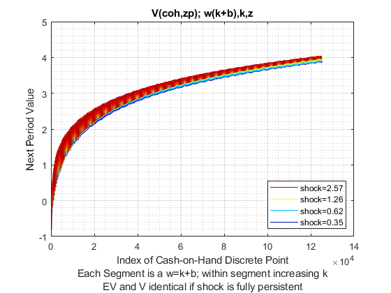 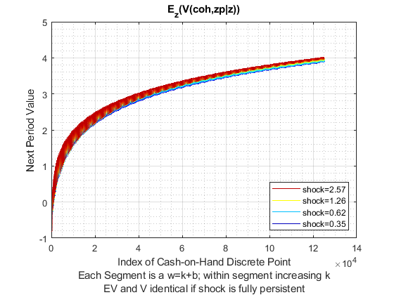 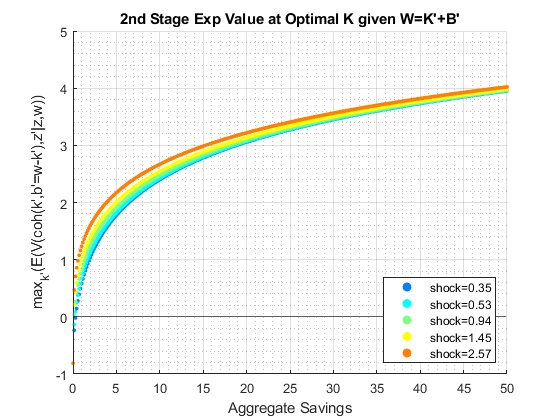
 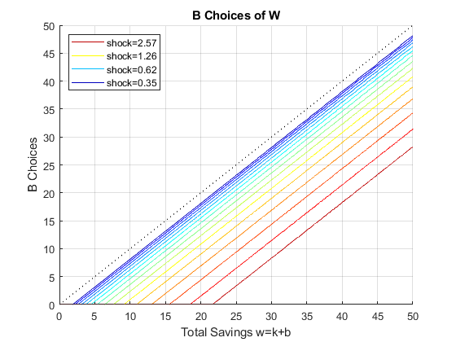 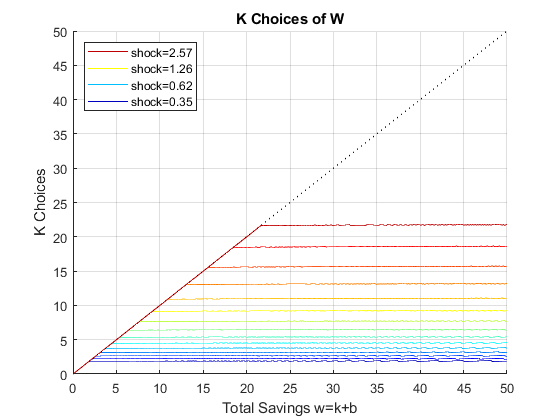 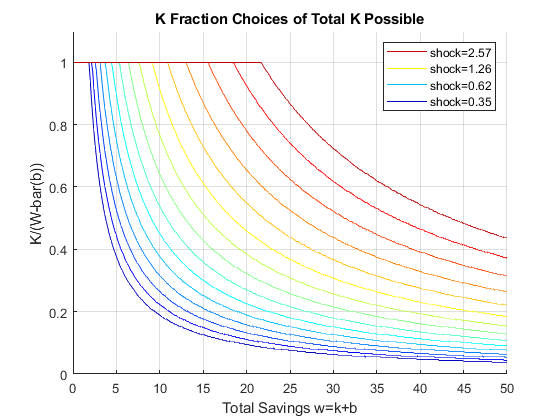
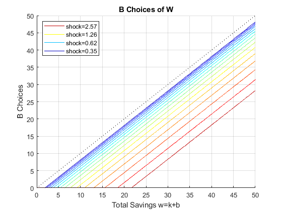 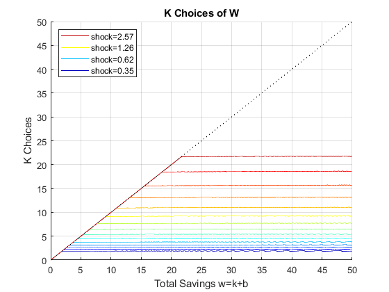 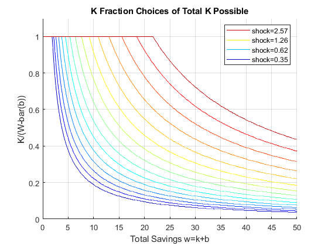 Solve 2nd Stage Fixed Level Grid k(w,z) choices, akz/wkz/iwkz
This is the grid in the akz/wkz/iwkz problems, we have a fixed grid, not a percentage based grid.
% Not default parameters, but parameters that generate defaults it_param_set = 4; bl_input_override = true; [param_map, support_map] = ffs_akz_set_default_param(it_param_set); support_map('bl_graph_evf') = bl_graph_evf; support_map('bl_display_evf') = bl_display_evf; param_map('fl_b_bd') = fl_b_bd; param_map('fl_w_max') = fl_w_max; param_map('fl_w_min') = param_map('fl_b_bd'); param_map('it_ak_n') = it_ak_n; param_map('it_w_n') = param_map('it_ak_n'); % this requires 250*(250-1)/2+250 = 31375 solution points [armt_map, func_map] = ffs_akz_get_funcgrid(param_map, support_map, bl_input_override); % 1 for override % Generating Defaults params_group = values(armt_map, {'ar_a_meshk', 'ar_k_mesha', 'ar_z'}); [ar_a_meshk, ar_k_mesha, ar_z] = params_group{:}; params_group = values(func_map, {'f_util_standin'}); [f_util_standin] = params_group{:}; mt_val = f_util_standin(ar_z, ar_a_meshk, ar_k_mesha); % Call Program ff_wkz_evf(mt_val, param_map, support_map, armt_map, bl_input_override);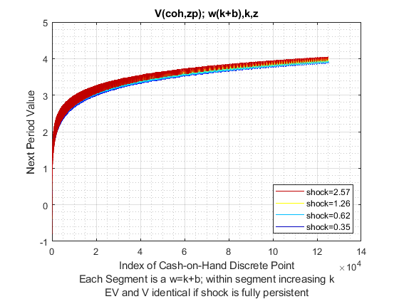 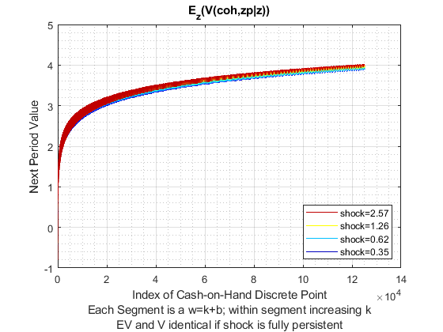 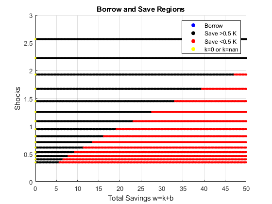 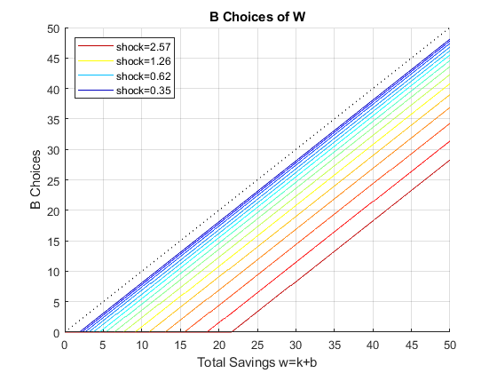 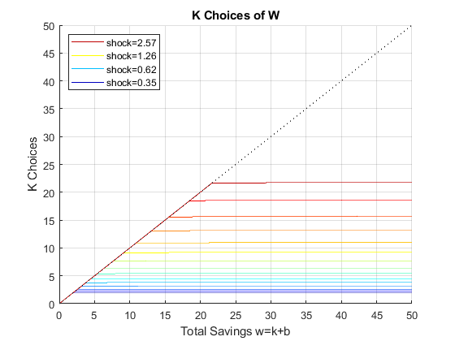 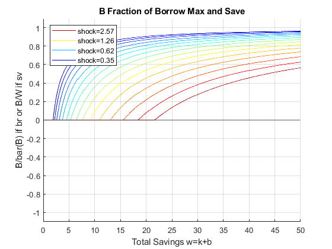 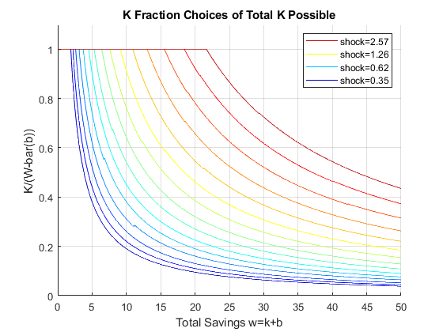